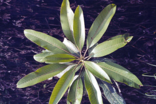
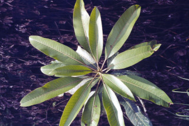
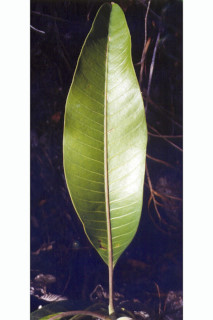
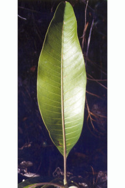

Trees, up to 35 m tall.
35 ಮೀ ಎತ್ತರದವರೆವಿಗೆ ಬೆಳೆಯುವ ಮರಗಳು.
35 മീറ്ററോളം ഉയരത്തില് വളരുന്ന മരങ്ങള്.
மரம், 35 மீ. உயரம் வரை வளரக்கூடியது.
Trunk fluted near base; bark scaly
ಕಾಂಡದ ಅಡಿಭಾಗ……fluted?.; ತೊಗಟೆ ಚಕ್ಕೆಯ ಮಾದರಿಯವು.
തായ്ത്തടി കീഴ്ഭാഗത്തിനടുത്ത് ചാലുകളോടുകൂടിയതാണ്; പുറംതൊലി ശല്ക്കങ്ങളോട്കൂടിയതാണ്.
மரத்தண்டின் குறுக்குவெட்டுத் தோற்றத்தில் ஒழுங்கற்ற வளையமானது; மரத்தின் பட்டை செதில்களுடையது.
Terete.
ಕವಲುಗಳು ಮತ್ತುಕಿರುಕೊಂಬೆಗಳು ಗುಂಡಾಕೃತಿಯವು.
ഉരുണ്ട ശാഖകളും ഉപശാഖകളും.
சிறிய நுனிக்கிளைகள் குறுக்குவெட்டுத் தோற்றத்தில் வளையமானது.
Watery and acrid.
ಜಿನುಗು ದ್ರವ ಜಲರೂಪಿ ಹಾಗೂ ಕಾರ ಮತ್ತು ಕಹಿ ಗುಣವನ್ನು ಹೊಂದಿರುತ್ತದೆ.
ജലമയവും പൊള്ളിക്കുന്നതുമായ സ്രവം.
தண்ணீர் போன்றது மற்றும் கொப்பளங்களை உருவாக்கவல்லது.
Leaves simple, alternate, spiral, clustered at twig ends; petiole 1.2-6.2 cm long, swollen at base, planoconvex in cross section; lamina 8-25 x 1.7-6 cm, narrow oblong-elliptic or lanceolate, apex gradually acuminate, base acute to attenuate, margin slightly undulate, subcoriaceous, glabrous; midrib raised above; secondary_nerves many, nearly straight or gradually curved 28 to 30 pairs; tertiary_nerves reticulate.
ಎಲೆಗಳು ಸರಳ, ಪರ್ಯಾಯ – ಸುತ್ತು ಜೋಡನಾ ವ್ಯವಸ್ಥೆಯಲ್ಲಿ ಕುಡಿಕೊಂಬೆಗಳ ತುದಿಯಲ್ಲಿ ಗುಂಪಾಗಿರುತ್ತವೆ;ಎಲೆತೊಟ್ಟು1.2 ರಿಂದ 6.2 ಸೆಂ.ಮೀ. ಉದ್ದವಾಗಿದ್ದು ತಳಭಾಗದಲ್ಲಿ ಉಬ್ಬಿಕೊಂಡಿರುತ್ತದೆ; ಎಲೆ ಪತ್ರ 8 – 25 x 1.7 -6 ಸೆಂ.ಮೀ ಗಾತ್ರವನ್ನು ಹೊಂದಿರುತ್ತದೆ. ಎಲೆಗಳ ಆಕಾರ ಸಂಕುಚಿತ ಧೀರ್ಘ ಚತುರಸ್ರಾಕಾರದ ಅಂಡವೃತ್ತಾಕೃತಿ ಅಥವಾ ಭರ್ಜಿಯಾಕಾರದಲ್ಲಿರುತ್ತದೆ. ಎಲೆತುದಿ ಕ್ರಮೇಣವಾಗಿ ಬಾಲರೂಪವಾಗುವಂತಹವು. ಎಲೆಬುಡ ಚೂಪು ಮಾದರಿಯಿಂದ ಹಿಡಿದು ಒಳಬಾಗಿದ ತಳವುಳ್ಳದ್ದಾಗಿರುತ್ತದೆ. ಅಂಚು ಕೊಂಚ ಅಲೆಯಾಕಾರದವು. ಮೇಲ್ಮೈ ಉಪ-ತೊಗಲಿನ ತರಹವಿದ್ದು ರೋಮರಹಿತವಾಗಿರುತ್ತದೆ; ಮಧ್ಯನಾಳ ಪತ್ರದ ಮೇಲ್ಬಾಗದಲ್ಲಿ ಉಬ್ಬಿರುತ್ತದೆ; ಎರಡನೇ ದರ್ಜೆ ನಾಳಗಳು ಹೆಚ್ಚು ಸಂಖ್ಯೆಯಲ್ಲಿದ್ದು(28 ರಿಂದ 30 ಜೋಡಿ) ನೇರವಾಗಿ ಅಥವಾ ಕೊಂಚ ತಿರುವು ರೂಪದಲ್ಲಿದ್ದು ಮೂರನೇ ದರ್ಜೆ ನಾಳಗಳು ಜಾಲಬಂಧ ವಿನ್ಯಾಸ ಹೊಂದಿರುತ್ತವೆ.
ഇലകള് ലഘുവും, സര്പ്പിളാകാരത്തില്, കമ്പുകളുടെ അറ്റത്തായി ഏകാന്തരക്രമത്തില് കൂട്ടമായടുക്കിയിരിക്കുന്നുതാണ്; 1.2 മുതല് 6.2 സെ.മീ. നീളം വരുന്ന ഇലഞെട്ടിന്റെ കീഴറ്റം വീര്ത്തിരിക്കുന്നതാണ്, കുറുകേയുള്ള ഛേദത്തില് മേല്ഭാഗം പരന്നും കീഴ്ഭാഗം ഉരുണ്ടിരിക്കുന്നതുമായ രൂപമാണ്; പത്രഫലകം 8 മുതല് 25 സെ.മീ. വരെ നീളമുള്ളതും 1.7 സെ.മീ. മുതല് 6 സെ.മീ. വരെ വീതിയുമുണ്ട്. വീതികുറഞ്ഞ, ആയതഗ ദീര്ഘവൃത്തീയമോ കുന്താകാരമോ ആണിതിന്, പതിഞ്ഞ ദീര്ഘാഗ്രത്തോടെയും, പത്രാധാരം നിശിതമോ, സാവധാനം നേര്ത്ത ് അവസാനിക്കുന്നതുമാണ്, അരികുകള് ചെറുതായി തരംഗിതമാണ്, ഉപചര്മ്മില പ്രകൃതത്തോ് കൂടിയതും അരോമിലവുമാണ്; ധാരാളം ദ്വിതീയ ഞരമ്പുകള്, ഇവ നേരേയോ സാവധാനം വളഞ്ഞിരിക്കുന്നതോ ആയ 28 മുതല് 30 വരെ ജോഡികളുണ്ടാകും; ത്രിതീയ ഞരമ്പുകള് ജാലികാവിന്യാസം തീര്ക്കുന്നു.
இலைகள் தனித்தவை, மாற்றுஅடுக்கமானவை, சுழல் போன்று அமைந்தவை, நுனிக்கிளையில் இலைகள் கூட்டமாக மற்றும் நெருக்கமாகமைந்தவை; இலைக்காம்பு 1.2-6.2 செ.மீ. நீளமுடையது, இலைக்காம்பின் தளப்பகுதி தடித்திருக்கும், குறுக்குவெட்டுத் தோற்றத்தில் பிளேனோகான்வக்ஸ், இலை அலகு 8-25 X 1.7-6 செ.மீ., குறுகிய நீள்சதுரம்-நீள்வட்டம் அல்லது ஈட்டி வடிவம், அலகின் நுனி சீராக அதிக்கூரியது, அலகின் தளம் கூரியது முதல் படிப்படியாக குறுகியது, அலகின் விளிம்பு சிறிது அலைப்போன்றது, சிறிது தடித்த இலைகள், கீழ்பரப்பு உரோமங்களற்றது; மையநரம்பு மேற்புறத்தில் அலகின் பரப்பைவிட உயர்ந்து காணப்படும்; இரண்டாம் நிலை நரம்புகள் அதிகமானது, நேரானது அல்லது படிப்படியாக வளைந்தது, 28-30 ஜோடிகளுடையது, மூன்றாம் நிலை நரம்புகள் வலைபின்னல் அமைப்பு கொண்டது.
Inflorescence terminal panicle; flowers polygamous, greenish white.
ಪುಷ್ಪಮಂಜರಿ ಅಗ್ರಸ್ಥಾನದಲ್ಲಿರುವ ಕವಲೊಡೆದ ಮಾದರಿಯದಾಗಿದ್ದು, ಶ್ವೇತ ಬಣ್ಣದ ಹಾಗೂ ಸಂಕೀರ್ಣ ಲಿಂಗಿ ಹೂಗಳನ್ನುಹೊಂದಿರುತ್ತವೆ.
പൂങ്കുലകള് ഉച്ഛസ്ഥ പാനിക്കിളുകളാണ്; പൂക്കള് ബഹുലിംഗികളും പച്ച കലര്ന്ന വെളുപ്പുമാണ്.
மஞ்சரி தண்டின் நுனியில் அமைந்த பேனிக்கிள், மலர்கள் ஒர்பாலானவை மற்றும் இருபாலானவை கலந்தவை (பாலிகேமஸ்), பச்சை கலந்த வெள்ளை நிறம்.
Drupe, fleshy; single seeded, compressed.
ಕಾಯಿಗಳು ಡ್ರೂಪ್ ಮಾದರಿಯವು ಹಾಗೂ ಮಾಂಸಲವಾಗಿರುವಂತಹವು; ಕಾಯಿಗಳು ಸಂಕುಚಿತವಾಗಿದ್ದು ಒಂದು ಬೀಜವನ್ನೊಳಗೊಂಡಿರುತ್ತದೆ.
അഭ്രകം (ഡ്രുപ്പ്) മാംസളമാണ്; പരന്ന ഒറ്റ വിത്തോടു കൂടിയതാണിത്.
உள்ளோட்டுத்தசைகனி (ட்ரூப்), சதைப்பற்றானது, ஒரு விதை கொண்டது, தட்டையானது.


 

 
